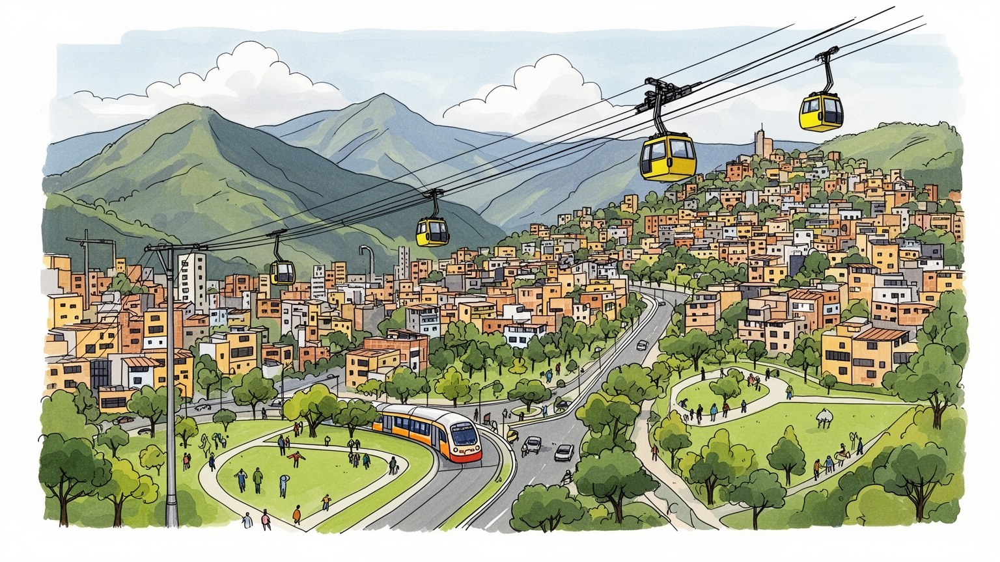
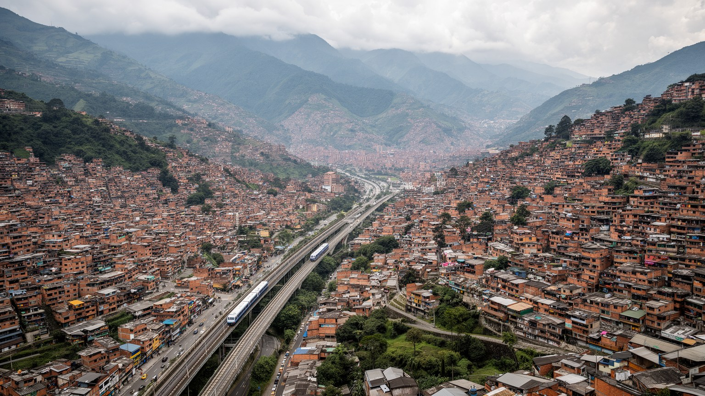
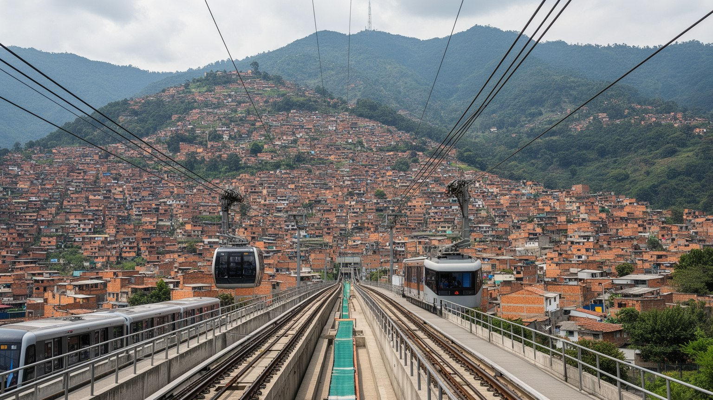
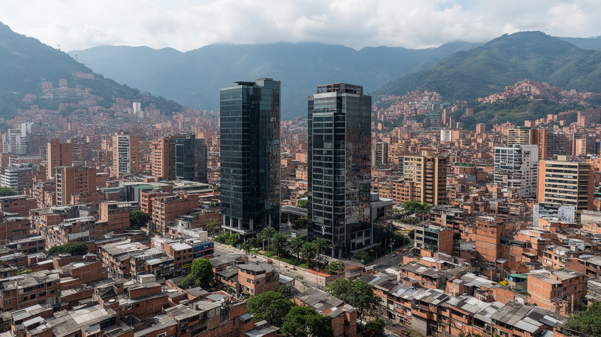
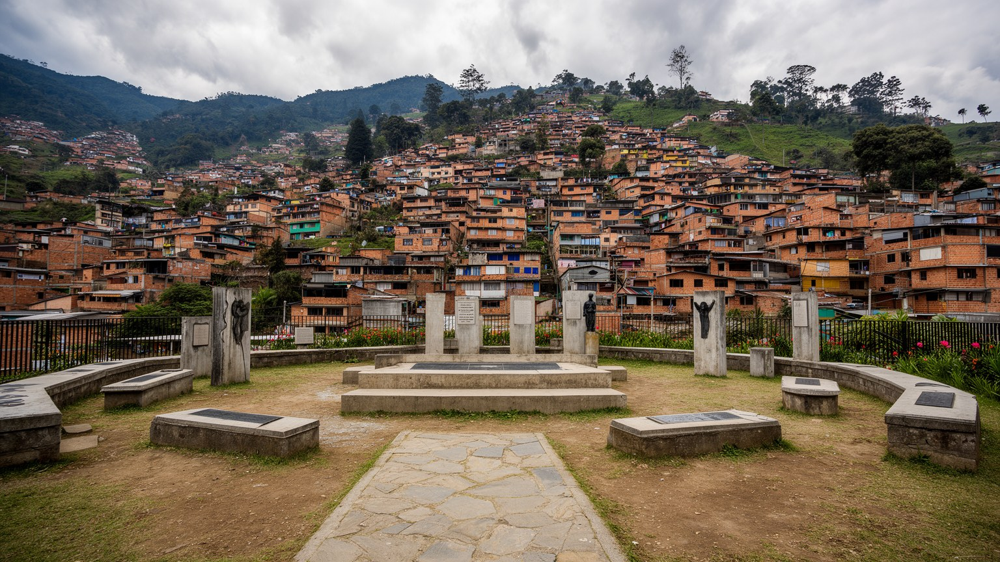
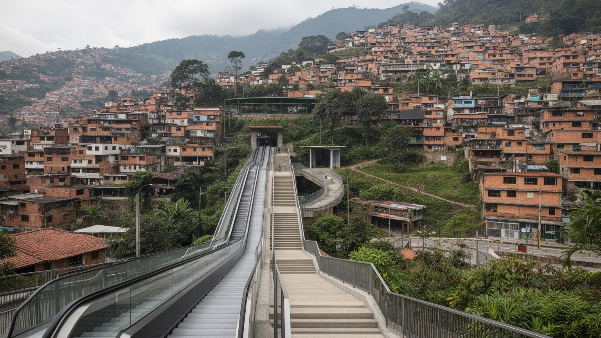
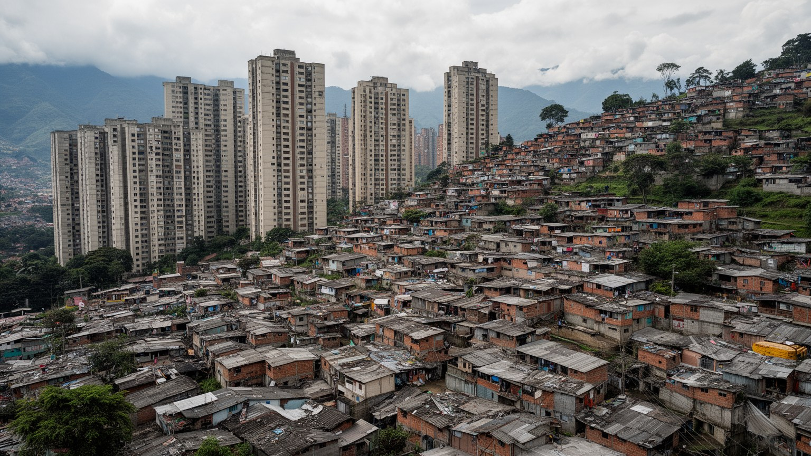
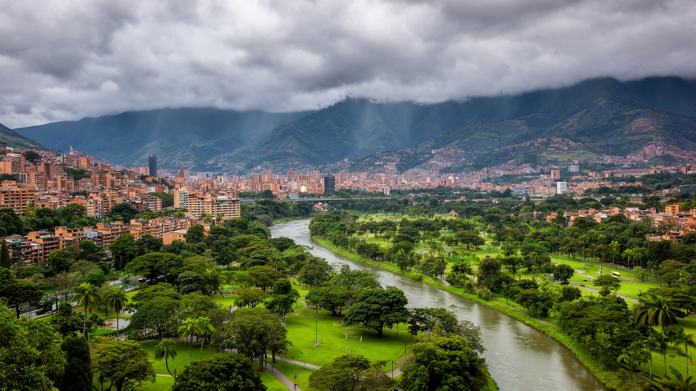
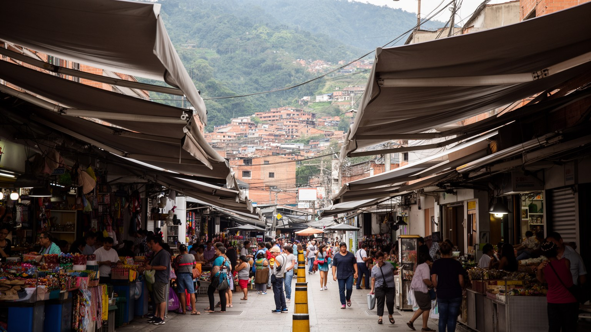
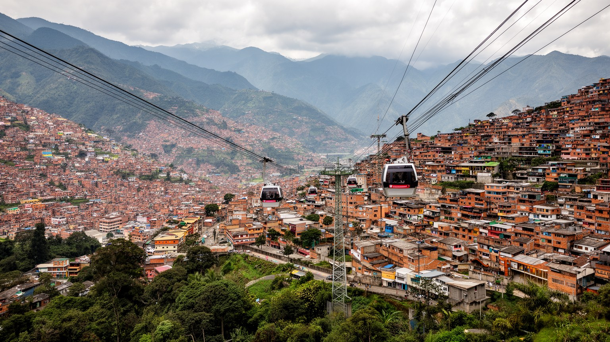

地政学
メデジンは首都ではありませんが、アンティオキア経済、山地交通、麻薬暴力の記憶、都市再生の象徴性を通じて国際的に読まれる都市です。ボゴタの制度とは違う地域の自負が、谷の政治と企業文化に残ります。外へ開く。

🇨🇴 コロンビア / アンティオキア県 / World City Atlas
アンデスのアブラ谷に細長く広がるコロンビア第二の都市。メトロ、ケーブルカー、繊維産業、花卉、大学、カトリックの祭礼、暴力の記憶、都市再生が急な斜面と谷底で重なります。
都市の骨格
メデジンは広い平野の都市ではありません。谷底を鉄道と幹線道路が走り、斜面の住宅地へケーブルカー、バス、階段、路地が伸びます。産業都市から学習と観光の都市へ変わる過程も、この地形の上で進みました。

メデジンは首都ではありませんが、アンティオキア経済、山地交通、麻薬暴力の記憶、都市再生の象徴性を通じて国際的に読まれる都市です。ボゴタの制度とは違う地域の自負が、谷の政治と企業文化に残ります。外へ開く。
繊維と衣料、金融、医療、大学、IT、建設、観光、花卉物流が都市を支えます。専門職の増加とともに、工場労働、露店、清掃、配送、家事労働も続き、斜面から谷底へ通う時間が生活条件を分けます。学びも鍵です。今も。
カトリックの教会、地域祭礼、家族の結びつき、音楽、レゲトン、花祭り、公共図書館がメデジンの文化を作ります。敬虔さと若い表現、山地の保守性と都市の実験性が、同じ地区の路地で混ざります。祈りも続きます。
観光客はメトロ、コムナ13、ボテロ広場、花祭りを巡りますが、住民には家賃、治安、雇用、坂道、雨、教育、近所の支援が日常です。名所の明るさと生活の緊張を合わせて見ると都市の奥行きが出ます。旅は慎重に。今も。

メデジンはアンデス北部のアブラ谷に細長く広がる都市です。谷底にはメトロ、川、幹線道路、商業地区、工業跡地が並び、両側の斜面には住宅地が階段状に上がっていきます。地形は景観の美しさだけでなく、所得、移動時間、災害リスク、治安の感じ方まで左右します。眺めのよい丘は観光写真では魅力的ですが、急斜面の住宅では地滑り、雨水、道路の狭さ、救急車や消防の到達が切実な問題になります。谷底の開発が進むほど家賃は上がり、斜面から働きに出る人ほど移動の負担を受けます。周辺自治体を含む都市圏は一つの生活圏として動き、工場、大学、空港への道路、郊外住宅が市境を越えて結ばれます。涼しい気候は都市の快適さを支えますが、谷に大気がこもるため交通と産業の排出は空気の質を悪化させます。雨の強い日には斜面の排水と階段の安全が問題になり、乾いた日には谷底の交通量が空気の重さとして感じられます。山は街を守る壁ではなく、開発の限界と生活の不平等を映す面でもあります。川沿いの再生、斜面の緑地保護、郊外へ伸びる道路は、都市の将来像をめぐる争点でもあります。地図を縦に読む視点が欠かせません。谷の幅は、都市の選択肢も限ります。メデジンを読むには、谷底の近代的な交通と、斜面の住宅が同じ都市を別の速度で経験していることを見る必要があります。

メデジンの都市イメージを大きく変えたものの一つが、谷底を走るメトロと丘へ上がるケーブルカーです。鉄道は中心部、大学、商業地区、郊外を結び、ケーブルカーはかつて孤立しがちだった斜面の地区を公共交通の網に接続しました。これは単なる観光装置ではなく、通勤、通学、買い物、病院への移動時間を短くする生活の基盤です。駅の周辺には図書館、公園、広場、学校、公共施設が配置され、交通と都市再生が組み合わされました。ただし、交通が通るだけで貧困や暴力が消えるわけではありません。運賃、乗り換え、夜間の安全、駅から家までの急な坂、非公式労働の不安定さは残ります。観光客が空中から見下ろす斜面には、毎日その道を歩く住民の時間があります。駅ができると商店や家賃も変わり、便利さが新しい負担を生むこともあります。障害のある人、高齢者、子ども連れにとっては、駅までの最後の坂や階段が移動の成否を決めます。バス、徒歩、バイク、非公式な送迎も鉄道を補い、谷の移動は一つの交通手段だけで完結しません。乗り継ぎの分かりやすさも、都市への参加を左右します。待ち時間も重要です。メデジンの交通政策が注目される理由は、都市が地形を言い訳にせず、公共投資を社会的な接続の道具として使った点にあります。成功を語る時ほど、駅の外に残る格差まで見ることが重要です。

メデジンは長くコロンビア有数の工業都市として成長しました。繊維、衣料、食品、機械、建設資材、金融、商業が谷の雇用を作り、アンティオキアの企業家精神は都市の自負にもなりました。近年は医療、大学、IT、デザイン、スタートアップ、ビジネスイベント、観光が存在感を増し、古い工場地帯や倉庫の再利用も進みます。花卉産業は周辺高地の農業と空港物流を通じて国際市場に結びつき、フェリア・デ・ラス・フローレスの華やかさともつながります。しかし産業転換は均等に利益を配るわけではありません。専門職やサービス職が増える一方、工場労働の縮小、非公式労働、若者の失業、低賃金の観光関連業務もあります。縫製の技能、病院の看護、ホテルの清掃、配送、警備、露店の販売は、数字に出にくい都市経済の土台です。新しい企業が生まれても、教育と交通に届かない地区では機会が遠いままです。女性の縫製労働や家事労働、若者の短期契約、移住者の露店販売も、都市の柔軟さと不安定さを同時に示します。職業訓練の質が差を縮めます。都市の革新性を測るなら、新しいオフィスやイベントの数だけでなく、斜面の若者が技能を学び、安定した仕事へ届くかを見る必要があります。メデジンの経済は、古い産業の記憶と新しい知識産業が同じ谷で競合しながら支え合う構造を持っています。

メデジンの名前は、二十世紀末の麻薬取引、武装組織、殺人、誘拐、恐怖の記憶と切り離せません。暴力は単に犯罪者の物語ではなく、貧困、国家の不在、武器、国際市場、若者の機会不足、地域支配が絡み合った社会の傷でした。現在の都市は大きく変わりましたが、過去を観光の刺激的な物語に縮めることはできません。被害者の家族、避難した人々、沈黙を強いられた地区、失われた若者の記憶は、街路、学校、墓地、壁画、記念施設に残ります。治安の改善は重要な成果である一方、武装グループや犯罪経済が完全に消えたわけではなく、見えにくい支配や恐喝が一部の地区で続くこともあります。子どもが安全に学校へ行けること、店が恐喝を受けずに営業できること、夜に帰宅できることは、平和を日常で測る指標です。記憶を語る場は、被害を受けた人が自分の言葉を取り戻す場所でもあります。外から来る人が過去を消費するほど、地域の痛みは再び沈黙させられます。事件名や人物名よりも、生活を失った家族の時間を中心に置く姿勢が必要です。追悼は都市の尊厳を守ります。対話も必要です。都市再生の成功を語る時には、誰が犠牲を払い、誰が語る権利を持つのかを問う必要があります。メデジンを歩くことは、恐怖から回復した都市の明るさだけでなく、記憶を軽く消費しない倫理を学ぶことでもあります。

コムナ13をはじめとする斜面の地区は、メデジンの都市再生を象徴する場所として知られています。屋外エスカレーター、壁画、展望、音楽、ガイドツアーは、かつて孤立や暴力で語られた地域を外へ開く手段になりました。地域の若者がラップやグラフィティで記憶を語り、住民が小さな店や案内で収入を得ることもあります。しかし、人気が高まるほど、生活の場所が観光の舞台になり、騒音、家賃、写真消費、地域の複雑な歴史の単純化が問題になります。公共投資は移動を改善し、誇りを生みましたが、すべての住民が同じ利益を得たわけではありません。犯罪の記憶、警察や軍の作戦、家族の喪失、避難、貧困は、明るい壁画の背後に残ります。ツアーの収入が地域に残る仕組み、子どもの通学を妨げない動線、住民が写真を拒める空気も必要です。外から来る人が増えるほど、地域の語りを誰が管理するのかが問われます。エスカレーターや展望台は便利さを示すだけでなく、長く無視された地区が都市の中心から見られる位置に変わったことも示します。地域再生を読むには、観光客の視点だけでなく、坂道を上り下りする住民、学校へ通う子ども、家賃を払う家族、店を営む人の時間を考える必要があります。コムナは都市の成功物語であると同時に、再生を誰のために進めるのかを問い続ける場所です。
メデジンの文化は、アンティオキアの山地社会、カトリックの生活暦、家族や近所の結びつき、若い音楽文化が交差して作られます。教会は礼拝だけでなく、祭礼、葬儀、慈善、地域の相談の場として働き、都市の急な変化の中で生活の節目を支えてきました。フェリア・デ・ラス・フローレスでは、花を背負うシジェテロの行列が周辺農村との結びつきを見せ、都市の誇りを祝います。ボテロの彫刻が並ぶ広場、美術館、大学、図書館、公園は文化施設として重要ですが、メデジンの表現はそれだけに収まりません。レゲトン、ヒップホップ、壁画、地域ラジオ、ダンス、サッカー応援、家族の食卓も都市の文化です。保守的な価値観と新しいジェンダー表現、敬虔さと夜の音楽、地方の記憶と国際的な観光が同じ谷に重なります。移民や国内他地域から来た人々の料理や言葉も、街の音を少しずつ変えています。信仰は古い制度であると同時に、孤立した人を支える相談先にもなります。サッカーの試合、母の日、葬儀、近所の祭りは、家族と地域の絆を確かめる場になります。若い表現が広がるほど、世代間の価値観の違いも街路に現れます。食卓の会話も文化です。音も残ります。文化を読む時には、祭りの華やかさだけでなく、それを準備する農家、縫製職人、音響、清掃、警備、家庭の労働も見る必要があります。

メデジンの暮らしは、谷底の便利さと斜面の負担が常に隣り合います。中心部やエル・ポブラドのような地区には商業、ホテル、企業、飲食、夜の娯楽が集まり、周縁や斜面には家族経営の店、学校、教会、公共階段、バス停、眺望のある住宅が広がります。住民にとって重要なのは、部屋の広さだけではありません。駅やバス停まで安全に歩けるか、雨の日に坂を下りられるか、夜勤後に帰れるか、子どもの学校や医療へ届くかが生活の質を決めます。家賃上昇や短期滞在向け住宅の増加は、一部地区で住民の負担を強めます。観光客が増えるほど飲食や宿泊の仕事は生まれますが、生活費や騒音、治安への不安も増えます。水道、排水、インターネット、保育、診療所がそろうかどうかも、同じ都市の中で差があります。高齢者や単身者には、近くの店や教会、近所の声かけが大きな支えになります。食堂の昼食、週末の家族訪問、坂道の買い物、雨宿りの店先は、観光案内には出にくい生活の風景です。近所の助け合い、家族のネットワーク、小さな商店は、制度だけでは支えきれない生活の安全網です。住宅政策は交通政策と直結します。安全な帰路も暮らしを支える条件です。メデジンの日常を理解するには、メトロの駅、斜面の階段、朝の市場、夕方の家族の食事を同じ都市の基礎として見る必要があります。

メデジンは「常春の都市」と呼ばれるほど気候が穏やかで、山に囲まれた景観は大きな魅力です。冷房に頼りすぎず過ごせる日が多く、屋外の広場やテラス、花の文化もこの気候に支えられています。しかし谷地形は環境面の弱点も持ちます。車、バス、バイク、工場、建設から出る汚染物質が谷に滞留しやすく、季節によって大気汚染が深刻になります。斜面の開発は緑地を削り、雨水の流れや地滑りの危険を変えます。都市の成長が続くほど、河川再生、公共交通、徒歩と自転車の安全、廃棄物処理、斜面の植生保護が重要になります。環境問題は美しい山並みを守る話だけではありません。喘息を持つ子ども、屋外で働く人、交通量の多い道路沿いの住民ほど空気の悪化を受けやすくなります。大気警報が出れば車の利用制限や運動の制約が起こり、経済活動と健康の調整が必要になります。緑地は景観ではなく、涼しさ、雨水、休息、子どもの遊び場を支える都市の基盤です。川の水質や廃棄物処理も、谷全体の暮らしに影響します。環境政策は豊かな地区の公園整備だけでなく、斜面や幹線道路沿いの負担を減らす公正の課題です。呼吸の権利も都市の権利です。常春の快適さを将来も保つには、観光のイメージではなく、排出を減らし、緑の回廊をつなぎ、危険な斜面に住む人の安全を考える都市運営が必要です。

メデジン観光は、ボテロ広場、アンティオキア博物館、メトロとケーブルカー、コムナ13、エル・ポブラド、花祭り、周辺のグアタペなど多様な入口を持ちます。以前の危険な都市というイメージから、変化と創造性を体験する都市へ印象が移ったことは大きな成果です。一方で、観光は都市の語られ方を強く変えます。暴力の歴史を刺激的な消費物にしたり、貧しい地区を背景として撮影したりすれば、住民の尊厳を傷つけます。地域ガイドに正当な対価を払い、写真を撮る前に生活の場所であることを意識し、過去の犯罪者を英雄視しない態度が必要です。観光収入は雇用を生みますが、家賃上昇、夜の騒音、性的搾取、薬物需要、短期滞在の増加も招きます。飲食店や宿泊施設の増加は若者の仕事を作る一方、住民向けの商店を減らし、地域の価格を押し上げることがあります。安全に楽しむことと、地域の歴史を尊重することは同時に求められます。短い滞在でも、公共交通を使い、地域のルールを守り、ガイドの説明をよく聞く姿勢が旅の質を変えます。夜の移動や撮影の配慮も、旅の責任に含まれます。メデジンを訪れる意味は、変化した都市を称賛することだけではなく、変化の費用と記憶を理解することにあります。旅の視線が地域の経済を支える一方、地域の生活を見世物にしない均衡が求められます。

メデジンを読むことは、暴力から再生した都市という単純な物語を越え、地形、交通、産業、記憶、文化、住宅、環境を同時に見ることです。谷底のメトロは近代化の象徴ですが、斜面の家まで続く階段や路地を見なければ生活の距離は分かりません。繊維と企業家精神は都市の基盤を作りましたが、工場労働や非公式労働、若者の失業も都市の現実です。コムナの壁画や花祭りは明るい表現を生みますが、その背後には家族の喪失、地域の支配、記憶をどう語るかという課題があります。公共図書館やケーブルカーは世界から注目される政策ですが、維持管理と雇用、教育、治安が伴わなければ成果は弱くなります。観光客にとってメデジンは学びやすい都市ですが、住民にとっては家賃、空気、坂道、仕事、近所の関係が日々の条件です。都市の強さは、過去を隠すことではなく、記憶を抱えたまま次の生活を作る力にあります。さらに、メデジンは首都ではないからこそ、地域の自負と中央への距離感を持ちます。谷の都市圏、周辺農村、花卉産業、空港、山地道路を合わせて見ると、都市は一つの行政境界より広い社会として動いています。その広がりを見れば、観光の成功も地域の農業、交通、教育、治安と切り離せないことが分かります。メデジンは、現代都市が傷を持ちながら公共投資と文化で自分を作り直す過程を示しています。